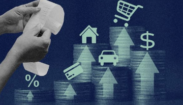

TIPS TO LIVE WITHIN YOUR MEANS
“Too many people spend money they haven't earned, to buy things they don't want, to impress people they don't like.” – Will Smith
Live within your means
Being financially responsible is important for your health and your financial life. To "live within your means" means that what you spend each month is less than or at least equal to the amount of money you bring in each month. For many people, it’s a lot easier said than done. Credit cards, loans, savings, and even emergency funds allow you to buy more things than your income would ordinarily allow. Unfortunately, that kind of lifestyle isn’t sustainable and, at some point, reckless spending will catch up to you. Learning to live below your means will help you avoid financial ruin and find the peace that comes with financial freedom.
Money problems often arise because we want more than we can afford. For some, a good meal is more than you can afford. For others, a new mobile phone or car is something you can’t afford. There is a great temptation to make use of loans or credits without carefully considering the long-term consequences. After all, the loan must be repaid, with interest. The easier it is to get a loan, the higher the interest rate.
Signs that you are living above your means
Before we learn how to live within our means, it is important to learn the signals that we are not. Listen to your answers to these questions and tighten your belt for financial prosperity. Of course, it is never too late to do the right things.
- Do you have an emergency fund? - Emergency funds are the money that was put aside, saved, to cater for expenses that are out of your regular budget. There is often pressure to look for extra funds at a very short notice such as funeral expenses, house repairs and even car repairs. Have you saved for possible uncertain events that require money? If not, you are leaving above your means and slight event can cause you serious financial implications leading to bad debt and cost you the peace of mind. The opposite is true. Having emergency fund will protect you from bad debt and gives you a peace of mind even in the times of hardship.
- Do you have an overdue credit card debt? - Having an overdue credit card shows you can't payback what you have borrowed. This leads to high interest rate which can be difficult to pay off. It can also lead to poor credit scoring hence making it hard to get credit in the future. Moreover, credit card provider might impose fees if you miss a payment or exceed credit limit. The other side of the coin is white, if you pay your credit card dues on time, you go interest free, and you will have a good credit score and thus end up charged lower rates on other facilities. Here, we are compairing two persons, one living above their means and the other lives within/ below their means.
- Are you saving less than 10% of your income? - If you save less than 10% of your net income, you're probably in over your head. If you're spending more than you earn, you're definitely in over your head. This is called dissavings. A lack of savings leaves you in constant danger that an emergency, a job loss, or a health problem will disrupt your life, hurt your family, or both. The individuals living within their means find it easy to save at least 10% of their income. It does not matter the frequency of income; daily, weekly, monthly and so on. However, the individuals living above their means find it difficult to save up to this threshold or they do not have savings plan at all.
- Are your bills spiraling out of control? - If you are struggling to pay rent or if you are making purchases with credit card or installments, your bills are out of control. How do you pay your Netflix or DSTV subscription? Via credit card? How are you paying for your car or household items? Through monthly installments? Remember, credit cards and hire purchases are expensive due to interest and fees. The individuals living within their means save and purchases items on cash. Otherwise, you are living out of your means.
- Are you purchasing big-ticket items without plan? - Big-ticket items can be your dream house or your dream car. If you buy a 3 bedroomed house or an expensive car with a hefty mortgage loan or an expensive car to service with high interest bank loans, you will struggle repaying. These are some serious ways you are living above your means. The persons living within their means, save money to achieve their dream goals.
- Are you going on expensive vacations you did not plan for? - unplanned vacations, buying latest phone or going out for dinner are mainly due to influence from friends and families. Most of us do this because we do not want to miss out on things and experiences with the people we love. Memories are great, but if you want to have a better relationship with money, meet your financial goals and stop living above your means, you need to be very intentional with your finances. Learn to say no when friends and families drag you into unplanned expenses and parties.
- Are you a defaulter? - Getting into debt is frustrating and humiliating. Yet some of us do this, either subconsciously or consciously to ourselves. If you are strapped in heavy debt and it is seemingly impossible for you to get out of it, then it could be a sign you are living above your means. Perhaps you are taking out a loan to pay for something you do not need. If you have already maxed out your credit card, you have borrowed from all your friends and you have used all the loan apps, you need to evaluate yourself and find out if you are living above your means. If you have an old debt that just won’t go away, chances are you are not planning your finances effectively. When you live within your means, you do not have to worry about getting debt collection calls or being blacklisted by your creditors.
- Are you taking loan to upgrade your life style? - iPhone just released its latest iPhone15 and it is the most coveted phone in the market right now, for all iPhone lovers. While some people can upgrade to this new phone without breaking a sweat, if you are taking out loans to do this, then you are living above your means. Whether it is that TV set you’ve wanted, a bigger house or new home appliances, make sure that you can comfortably upgrade your lifestyle without loaning your way into it. You will have massive debts that will be difficult to pay off and this will just leave you in financial ruin.
- Are your financial decisions influenced by future prospects (eg. bonuses and promotions)? - A lot of us tend to make financial decisions based on the money we expect to come in the future. We will take a huge debt and go on that expensive vacation because your boss promised you a promotion, which means more money, right? If you are a victim of this, you need to stop living above your means. Do not rely on that bonus or family inheritance to up your lifestyle and get yourself things you cannot afford. Work with what you have. Take one step at a time. When you finally get that bonus, you can use it to buy that new car or go on that vacation.
- Are you living paycheck to paycheck? - Living paycheck to paycheck is another clear sign that you are living above your means. When you live paycheck to paycheck, you can barely make it through the month until your next salary. Every shilling of your current paycheck is immediately used to pay for rent, groceries and other utilities and you’re left with nothing before the next paycheck. Money is always tight at the end of every month. If this is where you are at, then you are living above your means. Some of the major reasons why people live paycheck to paycheck are that they want to live a lifestyle they cannot afford, they do not budget and have general poor financial habits. Living paycheck to paycheck is frustrating and is a big hindrance for anyone who wants to achieve financial freedom.
How to live within your means?
If you’re convinced that living within your means is the right move, how do you actually do it? The key is to make a budget and make sticking to it easily. This doesn’t have to be intimidating. The key is to get familiar with what you spend, what you earn, and what your goals are. Here are some steps you could take to help get started.
-
Know your income
- Knowing your net take-home pay will help determine what your spending limits are.
Without knowing how much you earn every month, how can you live within your means?
To track your income remember to add in all payment sources, including but not limited to regular employment, freelance work, and side hustles.
Due to the unpredictable nature of cash received from selling used items (online or in a garage sale, for example), you may choose not to include this income at this step. Make a plan to put any unpredictable income towards your money goals, such as retirement savings and credit card debt repayment.
-
Truck your expenses
- Once you know your income, the next step is tracking your living expenses. It may
surprise you how much you are spending on specific categories.
Tracking your spending gives you an excellent place to start to make changes. It is a good idea to track your expenses for a few months as some costs may not come up every month.
To track your expenses, you can go forward and start saving all your receipts for the next 3 months. Or, if you are a card spender (either debit or credit card), you can go back and use your bank and credit card statements to track your purchases for the past few months.
-
Creating budget and stick to it
- Once you understand how much you earn and spend, a budget can help provide greater
control
over your finances. Budgeting doesn’t have to be a daunting task. There are different types of
budgeting which we are not discussing here.
A comprehensive plan includes all sources of income, savings, debt repayment, and accountability when it comes to living expenses and any other purchases. If this is your first time creating a plan, you may consider using a budget (or budgeting app) for a few months to get a better handle on your money.
-
Spend less than you earn
- One of the best ways to live below your means is to spend less than you make. If
you've gone through and calculated both your earnings and expenses, this rule is simple. But
that doesn't mean it's easy.
Once you have a budget, you can find ways to reduce expenses and build savings. I recommend setting daily or weekly spending limit, which can help eliminate small purchases that add up throughout the month.
Some other ways to reduce spending include paying off credit card statement balances each month to avoid interest and keeping an eye on recurring charges like subscriptions or memberships. If you’re not using them, consider canceling to save money.
-
Boost your income
- If your expenses are at the bare minimum and you’re still spending more money than
you make, then you may need to boost your income. Improve your skills and ask for
promotion or search for an alternative better-paying jobs or even second/ part-time jobs to help
make ends meet, freelance with your practical skills, sell unwanted items, or take on a side
hustle.
If you're saving for a larger purchase, consider taking on a part-time job or freelancing. You should also make sure you’re signed up for the right health, disability, and other company-provided benefits. Remember, your goal is to live within your means and gain financial freedom.
-
Build an emergency fund
- Building an emergency fund can create a buffer should an unexpected expense come up.
The benefit of this buffer is that you will not have to go into debt to pay for the unexpected
cost.
If you have an emergency fund, it is easier to avoid debt regardless of surprise expenses. Just make sure that your emergency fund is enough to cover an unexpected cost or drop in earnings.
-
Use sinking fund to plan for large-ticket purchases
- Sinking funds can be a great way to save up for large purchases. Break down the cost
into smaller chunks and start saving early for it.
By building sinking funds into your financial plan or budget, you will be able to afford large purchases without taking on debt. Avoiding debt will help you to live below your means.
-
Automate your savings
- Automating your savings and paying yourself first ensures that you have money to save.
It is also a psychological money trick that can help you to spend less.
If you pay yourself first, your chequing account will only show how much is left. You are more likely only to spend that amount. But if you wait until month's end to save what's left, you're more likely to run out of money to transfer to your savings account. Make saving money (even small amounts) a no-brainer by automating the process.
-
Do not compare yourself with others
- Have you heard of "keeping up with the Joneses"? Well, chances are the Joneses have a
lot of debt to fund their extravagant lifestyle. Things aren't always as they seem on the
surface (or on social media).
Don't waste your time and money trying to compare yourself to others. You will be much happier in the long run if you can align your spending with your values. Not only will you be able to live within your means, but you will also be spending money on things that bring you joy, not on what other people say you should spend your money on.
-
Find appropriate housing
- Housing is one of the largest expenses in most budgets. The lower you can get your
accommodation cost, the more money you can keep in your pocket (or the less money you need).
Appropriate housing may be choosing to rent instead of buying a home. It can also mean not buying or renting too much house. Do you really need all those extra rooms? Larger homes also come with higher utility and insurance costs whether you are renting or are an owner.
-
Embrace second-hand items
- Previously owned (or second-hand) items are increasing in popularity. Close to 83% of Canadians have stated that they have shopped at a thrift store. Embracing second-hand items will not only save you money but will also help the environment. I have bought lots of second-hand clothing that still has the tag on it. Imagine throwing something into the landfill that is still essentially brand new.
And when it comes to vehicles, buying second-hand can save you the significant depreciation that occurs as soon as you drive a new car off the lot. Like anything, you may have to shop around a bit to find quality items. But the extra effort is usually worth it.
-
Negotiate with your service providers
- Service providers (internet, cable, phone service, insurance, credit card company, student loans) often have negotiable rates. By setting an annual reminder to review and negotiate these fees, you can save a lot of money over time.
It may take you a few hours of your time to negotiate with all your service providers, but it can prove to be well worth your time.
The tips for negotiating rates are: ask to speak with someone in the loyalty department, know competitors rate, ask if they offer special discount for students, seniors and so on, and don't afraid to call back and speak to someone else.
-
Create a gap
- Creating a gap between wanting to purchase something and making the purchase can save money and reduce impulse buying.
The gap can be as short as a few hours or as long as a few days. If you still want the item after the wait, you will probably be more comfortable purchasing it. And the longer the gap, the more time you give yourself to save up for the item – another way to live within your means.
-
Save money wherever you can
- There are many ways you can save money without compromising your lifestyle or feeling deprived.
Can you pack your lunch at home instead of eating out every day? Is there an opportunity to carpool to work or work from home part-time? These are just two of the many ways you can cut expenses and save money.
Conclusion
Living within your means is about avoiding overspending by trying to live with what your income cannot purchase. You will end up running into bad debt and pay much more in terms of interest and fees. It is also important to note that I want you to live a better life, so I say, live within your means as you keep pushing your means. Allow me to conclude with the sayings from Calvine Coolidge, "There is no dignity quite so impressive, and no independent quite so important, as living within your means." Thank you for reading!
About the Author
Galm Dida - Credit and Investment Coach (KCB - Isiolo) - I am passionate of financial independence for youth and women in marginalized regions. Currently supporting over 15 women and youth groups around Isiolo in the matters of savings and investment. Join us as we inspire the community in financial success.
Contact
Tell: 0741370493 || email: Send me an email || whatsapp: WhatsApp Me
Quick links
Learn more about money market fund (MMF)